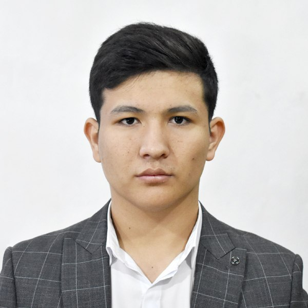

My biography
I am Dilshod and surname is Urozov. I was born on August 8, 2004, in
Kizirik district in Surkhandarya region. I studied at School N40 in
Kizirik district. I was admitted to school in 2011. But after 3 years, We moved to Tashkent with my family. After finishing
school, I applied to a state university but was not accepted, then I decided to apply to non-state university (UTAS).
But after 2 years, I think deeply and I decided to freeze my study, Then I heard about Najot ta'lim from my friends
and I studied in that about a year. I learned NodeJs and ReactJs for being full-stack developer.
SKILLS
- Language: Javascript, Typescript, Python
- APIs: PostgreSQL, MySQL, MongoDb
- Microservices: RestAPI, Socket, Graphql
- Frameworks, NestJs, Express
Ways to contact me:
Telegram
📞 +998 90 523 43 82